 A Greater LA: Climate Action Framework
California is committed to dramatically reducing its contribution to global climate change. The state’s goal of reducing greenhouse gas emissions 40% below 1990 levels by 2030 will require collaboration among cities, agencies, and regional government. As 25% of the state’s population, the Los Angeles region will play an essential role.
Scientists expect the impacts of climate change to include increased heat, decreased water reliability, and rising sea levels to increase through midcentury.
Meeting these challenges will require transformation in energy, transportation and land use, water, public health, and ocean and coastal management. A Greater LA: A Framework for Climate Action lays out a set of recommendations in each of these areas to maximize regional benefits and help California achieve its ambitious goals.